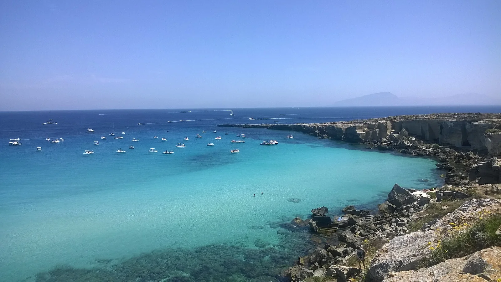

Cala Rossa
Favignana, Sicile, Italie · snorkeling, baignade

Crique bordée d’anciennes carrières de tuf sur la côte nord-est de Favignana, dans l’aire marine protégée des îles Égades. L’eau d’un bleu très clair est idéale pour le snorkeling.
- Lieu
- Favignana, Sicile, Italie
- Niveau
- Débutant
- Activités
- snorkeling, baignade
- Type d'eau
- Mer / océan
- Coordonnées
- 37.92, 12.36 (position approximative du secteur)
Dangers à connaître
- Rochers glissants et arêtes de tuf à l’entrée dans l’eau.
- Nombreux bateaux au mouillage en été : nage avec une bouée visible.
Le conseil d'Ocean Buddy
Il n’y a pas de plage de sable : entre dans l’eau par les rochers plats avec des chaussons et viens tôt, avant les bateaux d’excursion.
Ouvrir dans Ocean Buddy Télécharger sur l'App Store
Source : Fiche Ocean Buddy · septembre 2026 · à vérifier localement.